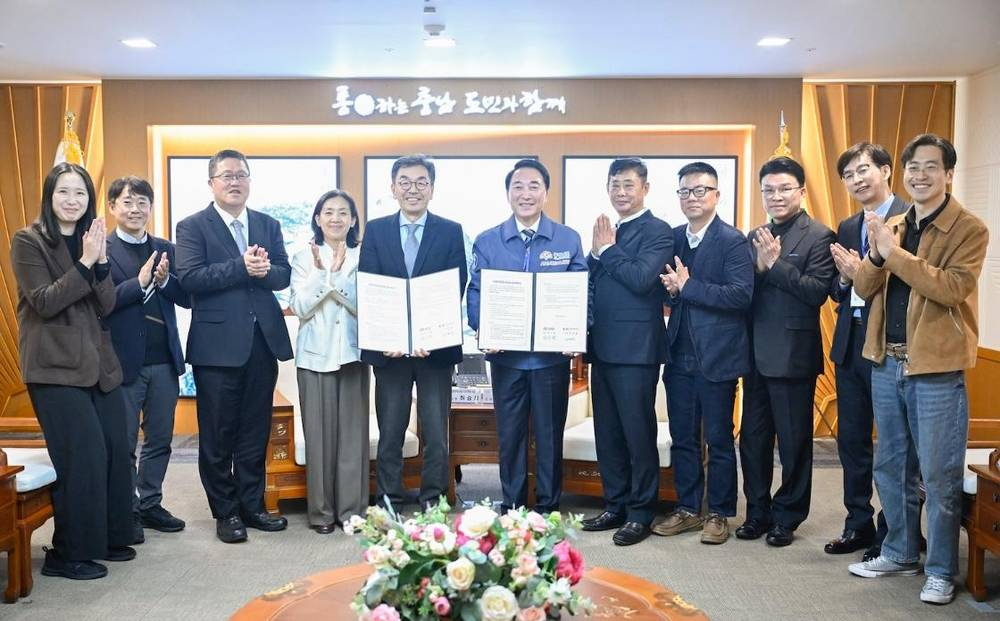

전력망 막힌 햇빛소득마을 133곳에 저장장치, 국비 981억 원 커뮤니티솔라 공모 시작
에너지공단, 55개 배전선로에 ESS 지원…국비 40%·지방비 30%·민간 30% / 5개 권역마다 통합발전소 사업자 1곳, 12월 11일 마감




수원 권선1동 공영주차장, 옥상 주차면 지붕에 44.64kW 태양광
옛 행정복지센터 부지에 지상 5층·122대 규모, 사업비 67억 원 / 전기요금 연 약 1,200만 원 절감 추산…23일부터 무료 시범운영

수자원공사, 50여 개 기관과 수상태양광 협의체 출범…2030년까지 10곳 500MW 개발
정책제언·기술시공·기자재 3개 분과, 반기마다 정기회의 / 첫 안건은 수상구조물 성능·평가 기준
오늘 주목할 소식
- 강원 기후변화 대응 복합센터 춘천에 개관, 한국기후변화연구원은 9월 먼저 입주
- 협동조합·사회적기업이 함께 쓰는 '혁신허브' 6곳…청도는 옛 보건소, 칠곡은 공공구매 연결
- 농공단지·캠퍼스에 AI 마이크로그리드, 정부 지원 104억7,000만 원 2차 공모…12월 7~14일 접수
- 인천 영종구, 내년 227곳에 태양광·태양열·지열 보급…총사업비 41억9,000만 원
- 해남군의회·농민단체, 신해남-신강진 345kV 송전선로보다 지역 소비 체계 먼저 요구
- 충남도, 수출 중소기업 탄소 배출량 산정·검증 돕는 전담조직 가동…철강·알루미늄부터
햇빛소득마을 더보기 ›
정치 더보기 ›
농공단지·캠퍼스에 AI 마이크로그리드, 정부 지원 104억7,000만 원 2차 공모…12월 7~14일 접수
농공단지는 같은 배전선로·변전소 입주기업 5곳 이상 묶어야 / 출력제어 대상 지역 가점 최대 4점, 봄·가을 정해진 시간 저장장치 충전 의무
정책 더보기 ›
농공단지·캠퍼스에 AI 마이크로그리드, 정부 지원 104억7,000만 원 2차 공모…12월 7~14일 접수
농공단지는 같은 배전선로·변전소 입주기업 5곳 이상 묶어야 / 출력제어 대상 지역 가점 최대 4점, 봄·가을 정해진 시간 저장장치 충전 의무
산업·경제 더보기 ›
수자원공사, 50여 개 기관과 수상태양광 협의체 출범…2030년까지 10곳 500MW 개발
정책제언·기술시공·기자재 3개 분과, 반기마다 정기회의 / 첫 안건은 수상구조물 성능·평가 기준
금융 더보기 ›
지역 중소·중견기업 보증부 대출 4조5,000억 원, 시·도 공모 성적 따라 나눈다
1차 13개 시·도에 3조7,400억 원…최우수 3곳 3,800억 원씩 / 11월 2일 발표보다 등급별 금액 줄고 7,600억 원은 2차 초광역 공모로
사회 더보기 ›
협동조합·사회적기업이 함께 쓰는 '혁신허브' 6곳…청도는 옛 보건소, 칠곡은 공공구매 연결
행안부, 고양·안성·청도·칠곡·부여·홍성 선정…민관협의체가 운영 모형 짠다 / 「사회연대경제기본법」 2027년 3월 16일 시행 앞둬
지역 더보기 ›
수원 권선1동 공영주차장, 옥상 주차면 지붕에 44.64kW 태양광
옛 행정복지센터 부지에 지상 5층·122대 규모, 사업비 67억 원 / 전기요금 연 약 1,200만 원 절감 추산…23일부터 무료 시범운영
오피니언 더보기 ›
이순형 동신대 교수, 전남광주 재생에너지 50GW 일감 지역 기업에 돌리자 제안
투자 250조 원 추산하며 발주 시간표·공동도급·인력 양성 주문…산업부는 호남 주요 전력망 확충을 2031년 이후로 설명
시민에너지 더보기 ›
전력망 막힌 햇빛소득마을 133곳에 저장장치, 국비 981억 원 커뮤니티솔라 공모 시작
에너지공단, 55개 배전선로에 ESS 지원…국비 40%·지방비 30%·민간 30% / 5개 권역마다 통합발전소 사업자 1곳, 12월 11일 마감
送電網に接続できない「日差し所得村」133か所に蓄電池、国費981億ウォンのコミュニティソーラー公募始まる
エネルギー公団、55の配電線にESS支援…国費40%・地方費30%・民間30% / 5圏域ごとに統合発電所事業者1社、12月11日締め切り


水原・勧善1洞の公営駐車場、屋上駐車場の屋根に44.64kWの太陽光
旧行政福祉センター跡地に地上5階・122台規模、事業費67億ウォン / 電気料金は年約1,200万ウォン節減の見込み…23日から無料で試験運営
韓国水資源公社、50余りの機関と水上太陽光協議体を発足…2030年までに10カ所500MW開発
政策提言・技術施工・資機材の3分科会、半期ごとに定例会議 / 最初の議題は水上構造物の性能・評価基準
今日の注目ニュース
- 江原道の気候変動対応複合センターが春川に開館、韓国気候変動研究院は9月に先行入居
- 協同組合・社会的企業が共に使う「イノベーションハブ」6か所…清道は旧保健所、漆谷は公共調達につなぐ
- 農工団地・キャンパスにAIマイクログリッド、政府支援104億7,000万ウォンの第2次公募…12月7〜14日受付
- 仁川・永宗区、来年227か所に太陽光・太陽熱・地熱を普及…総事業費41億9,000万ウォン
- 海南郡議会と農民団体、新海南-新康津345kV送電線より地域消費の体制づくりを先に求める
- 忠清南道、輸出中小企業の炭素排出量の算定・検証を支援する専任組織を始動…鉄鋼・アルミニウムから
太陽光所得村 もっと見る ›
政治 もっと見る ›
農工団地・キャンパスにAIマイクログリッド、政府支援104億7,000万ウォンの第2次公募…12月7〜14日受付
農工団地は同じ配電線・変電所の入居企業5社以上で参加 / 出力制御対象地域に最大4点の加点、春・秋の指定時間に蓄電池の充電義務
政策 もっと見る ›
農工団地・キャンパスにAIマイクログリッド、政府支援104億7,000万ウォンの第2次公募…12月7〜14日受付
農工団地は同じ配電線・変電所の入居企業5社以上で参加 / 出力制御対象地域に最大4点の加点、春・秋の指定時間に蓄電池の充電義務
産業・経済 もっと見る ›
韓国水資源公社、50余りの機関と水上太陽光協議体を発足…2030年までに10カ所500MW開発
政策提言・技術施工・資機材の3分科会、半期ごとに定例会議 / 最初の議題は水上構造物の性能・評価基準
金融 もっと見る ›
江原道の鉄原・華川の郡議員、接境地域政策フォーラムで営農型太陽光の郡民ファンドを提案
鉄原の農地の約60%が外部所有との懸念…華川は軍の遊休推定地約1,087万㎡の活用特例拡大を提案
社会 もっと見る ›
協同組合・社会的企業が共に使う「イノベーションハブ」6か所…清道は旧保健所、漆谷は公共調達につなぐ
行政安全部、高陽・安城・清道・漆谷・扶余・洪城を選定…官民協議体が運営モデルを作る / 「社会連帯経済基本法」2027年3月16日施行を控え
地域 もっと見る ›
水原・勧善1洞の公営駐車場、屋上駐車場の屋根に44.64kWの太陽光
旧行政福祉センター跡地に地上5階・122台規模、事業費67億ウォン / 電気料金は年約1,200万ウォン節減の見込み…23日から無料で試験運営
オピニオン もっと見る ›
李舜衡・東新大教授、全南光州の再エネ50GW事業を地元企業の仕事に回すよう提案
投資250兆ウォンと推計し、発注スケジュール・共同受注・人材育成を要請…産業部は湖南の主要送電網の拡充を2031年以降と説明
市民エネルギー もっと見る ›
送電網に接続できない「日差し所得村」133か所に蓄電池、国費981億ウォンのコミュニティソーラー公募始まる
エネルギー公団、55の配電線にESS支援…国費40%・地方費30%・民間30% / 5圏域ごとに統合発電所事業者1社、12月11日締め切り
133个电网受阻的"阳光收益村"将配储能，国费981亿韩元社区光伏项目开始招标
能源公团为55条配电线路支持ESS…国费40%、地方费30%、民间30% / 5个圈域各选1家虚拟电厂运营商，12月11日截止
水原劝善1洞公营停车场在屋顶停车层加盖顶棚，安装44.64千瓦太阳能
利用原行政福利中心用地建成地上5层、可停122辆车，总投资67亿韩元 / 预计每年节省电费约1,200万韩元…23日起免费试运营
今日关注
- 江原气候变化应对综合中心在春川开馆，韩国气候变化研究院9月已先行入驻
- 合作社与社会企业共用的“创新枢纽”6处…清道利用旧保健所，漆谷对接公共采购
- 农工园区、大学校园建AI微电网，政府支援104.7亿韩元第二轮公募…12月7日至14日受理
- 仁川永宗区明年将在227处推广太阳能光伏、太阳能热和地热…总投资41亿9,000万韩元
- 海南郡议会与农民团体要求先建立本地消纳体系，再建新海南—新康津345kV输电线路
- 忠清南道成立专门组织，帮助出口中小企业核算与核查碳排放…从钢铁和铝开始
阳光收入村 更多 ›
政治 更多 ›
农工园区、大学校园建AI微电网，政府支援104.7亿韩元第二轮公募…12月7日至14日受理
农工园区须联合同一配电线路或变电站的5家以上入驻企业 / 弃电限制地区最多加4分，春秋指定时段须为储能充电
政策 更多 ›
农工园区、大学校园建AI微电网，政府支援104.7亿韩元第二轮公募…12月7日至14日受理
农工园区须联合同一配电线路或变电站的5家以上入驻企业 / 弃电限制地区最多加4分，春秋指定时段须为储能充电
产业·经济 更多 ›
韩国水资源公社与50余家机构成立水上光伏协议体…2030年前开发10处500MW
设政策建议、技术施工、器材3个分会，每半年召开例会 / 首个议题为水上结构物性能与评价标准
金融 更多 ›
江原道铁原、华川郡议员在边境地区政策论坛提议设立农光互补郡民基金
担忧铁原约60%农地归外地人所有…华川提议扩大军队闲置推定用地约1,087万㎡的利用特例
社会 更多 ›
合作社与社会企业共用的“创新枢纽”6处…清道利用旧保健所，漆谷对接公共采购
行政安全部选定高阳、安城、清道、漆谷、扶余、洪城…由官民协议体制定运营模式 / 《社会连带经济基本法》将于2027年3月16日施行
地方 更多 ›
水原劝善1洞公营停车场在屋顶停车层加盖顶棚，安装44.64千瓦太阳能
利用原行政福利中心用地建成地上5层、可停122辆车，总投资67亿韩元 / 预计每年节省电费约1,200万韩元…23日起免费试运营
评论 更多 ›
东新大学教授李舜衡建议：把全南光州50GW可再生能源订单交给本地企业
估算投资250万亿韩元，要求公布发包时间表、联合承包、培养人才…产业部称湖南主要电网扩建在2031年之后
市民能源 更多 ›
133个电网受阻的"阳光收益村"将配储能，国费981亿韩元社区光伏项目开始招标
能源公团为55条配电线路支持ESS…国费40%、地方费30%、民间30% / 5个圈域各选1家虚拟电厂运营商，12月11日截止
Storage for 133 grid-blocked solar income villages as 98.1 billion won community solar call opens
Korea Energy Agency backs ESS on 55 distribution lines, split 40% national, 30% local, 30% private / One VPP operator per region across five regions; applications close Dec. 11
Suwon's Gwonseon 1-dong public car park puts 44.64kW of solar on a roof over its top deck
Five-storey, 122-space car park on a former community centre site cost 6.7 billion won / City estimates about 12 million won a year in power savings; free trial from Nov. 23
K-water launches floating solar council with some 50 organisations, plans 500MW at 10 sites by 2030
Three working groups on policy, engineering and equipment, with regular meetings every six months / First agenda item: performance and evaluation standards for floating structures
Today's highlights
- Gangwon opens climate change response centre in Chuncheon; Korea Research Institute on Climate Change moved in first in September
- Six "innovation hubs" for cooperatives and social enterprises: Cheongdo to use a former health centre, Chilgok to link firms with public procurement
- Second call for AI microgrids at rural industrial complexes and campuses opens with 10.47 billion won in government support; applications Dec. 7–14
- Incheon's Yeongjong-gu to put solar, solar thermal and geothermal at 227 sites next year, with 4.19 billion won budget
- Haenam council and farmers' groups demand local-use system before Sinhaenam–Singangjin 345kV line
- South Chungcheong sets up task force to help exporting SMEs calculate and verify carbon emissions, starting with steel and aluminium
Sunlight Income Village More ›
- Storage for 133 grid-blocked solar income villages as 98.1 billion won community solar call opens
- Jecheon Cooperative and Geonju Sign MOU on "Sunlight Income Village" Projects, Specific Projects Still Undecided
- Goseong's Jangsin 1-ri sunlight income village to finish in December, with expected income of 81.29 million won a year
Politics More ›
Second call for AI microgrids at rural industrial complexes and campuses opens with 10.47 billion won in government support; applications Dec. 7–14
Rural industrial complexes must bring in at least five tenant firms on the same distribution line or substation / Up to 4 bonus points for curtailment-hit areas; storage must charge at set hours in spring and autumn
- Nuclear deliberation committee holds public debate on Nov. 25; sign-ups to attend close on the 23rd
- Korea joins carbon market coalition, bringing membership to 13 and a seat in talks on common offset principles
- Balcony solar demand from local governments reaches 13,629 homes, 13.6% of the 100,000-home target
- Bill would allow solar leases on industrial-park roofs and idle land before completion
Policy More ›
Second call for AI microgrids at rural industrial complexes and campuses opens with 10.47 billion won in government support; applications Dec. 7–14
Rural industrial complexes must bring in at least five tenant firms on the same distribution line or substation / Up to 4 bonus points for curtailment-hit areas; storage must charge at set hours in spring and autumn
- Nuclear deliberation committee holds public debate on Nov. 25; sign-ups to attend close on the 23rd
- Korea joins carbon market coalition, bringing membership to 13 and a seat in talks on common offset principles
- Bill would allow solar leases on industrial-park roofs and idle land before completion
- Defense ministry drafts its first military energy transition plan, aimed at keeping power on during blackouts
Industry & Economy More ›
K-water launches floating solar council with some 50 organisations, plans 500MW at 10 sites by 2030
Three working groups on policy, engineering and equipment, with regular meetings every six months / First agenda item: performance and evaluation standards for floating structures
- South Chungcheong sets up task force to help exporting SMEs calculate and verify carbon emissions, starting with steel and aluminium
- [Busan Sunlight Income ②] Corporate PPAs yield about 2%; researchers propose the city buy the power and save on emission allowances
- Cheorwon and Hwacheon county councillors propose an agrivoltaic residents' fund at border-region policy forum
- Korea's public finance put $27.7 billion into overseas fossil fuels, 4.8 times its climate finance
Finance More ›
Cheorwon and Hwacheon county councillors propose an agrivoltaic residents' fund at border-region policy forum
Concern that about 60% of Cheorwon farmland is owned by outsiders; Hwacheon councillor proposes wider use of about 10.87 million sq. m of presumed idle military land
Society More ›
Six "innovation hubs" for cooperatives and social enterprises: Cheongdo to use a former health centre, Chilgok to link firms with public procurement
Interior ministry selects Goyang, Anseong, Cheongdo, Chilgok, Buyeo and Hongseong; public-private councils to shape operating models / Framework Act on the Social Solidarity Economy takes effect March 16, 2027
- Balcony solar demand from local governments reaches 13,629 homes, 13.6% of the 100,000-home target
- Daejeon holds citizen energy walk to mark opening of solar conference, 1,500 pre-registered residents join
- Up to two-thirds of transmission-line support funds to go to nearby areas; resident briefings rise from two to three
- Seoul Councillor Oh Jung-seok Asks SH to Disclose Net-Billing Status at Rental Estates With Rooftop Solar
Regions More ›
Suwon's Gwonseon 1-dong public car park puts 44.64kW of solar on a roof over its top deck
Five-storey, 122-space car park on a former community centre site cost 6.7 billion won / City estimates about 12 million won a year in power savings; free trial from Nov. 23
- Gangwon opens climate change response centre in Chuncheon; Korea Research Institute on Climate Change moved in first in September
- Incheon's Yeongjong-gu to put solar, solar thermal and geothermal at 227 sites next year, with 4.19 billion won budget
- Haenam council and farmers' groups demand local-use system before Sinhaenam–Singangjin 345kV line
- South Chungcheong sets up task force to help exporting SMEs calculate and verify carbon emissions, starting with steel and aluminium
Opinion More ›
Dongshin University professor Lee Soon-hyung proposes steering Jeonnam-Gwangju's 50 GW renewables work to local firms
Estimates 250 trillion won in investment, asks for tender schedules, joint contracting and training; industry ministry says main Honam grid expansion comes after 2031
Citizen Energy More ›
Storage for 133 grid-blocked solar income villages as 98.1 billion won community solar call opens
Korea Energy Agency backs ESS on 55 distribution lines, split 40% national, 30% local, 30% private / One VPP operator per region across five regions; applications close Dec. 11
- Gangwon Localities Spread "Wind Income": Taebaek Gadeoksan Dividends Reach 11.9 Billion Won for the Province, Goseong Eyes 20% Resident Stake
- Jecheon Cooperative and Geonju Sign MOU on "Sunlight Income Village" Projects, Specific Projects Still Undecided
- [Busan Sunlight Income ②] Corporate PPAs yield about 2%; researchers propose the city buy the power and save on emission allowances
- [Busan Sunlight Income ①] 10MW on public land with 4.5 billion won from citizens; pilot call opens January 2027